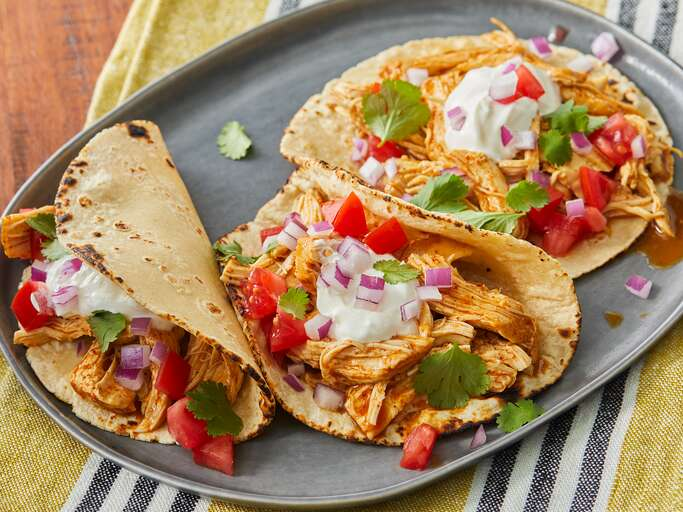

Slow Cooker Chicken Tacos

Description
This slow cooker chicken tacos recipe is the perfect set-it-and-forget-it meal.
With just 3 ingredients, this recipe is nearly effortless to make.
Leftover chicken can be stored in refrigerator for up to 3 days.
Ingredients
- 1 cup chicken broth
- 3 tbsp. taco seasoning
- 1 lb. boneless, skinless chicken breast
Directions
- Gather ingredients and combine chicken with taco seasoning in a bowl
- Place chicken breast in crockpot, add chicken broth
- Cook on low for 6-8 hours
- Shred and serve chicken on tortilla topped with diced onion, diced tomato, cilantro
**Homemade taco seasoning: chili powder, ground cumin, dried oregano, sea salt, black pepper, ground paprika, garlic powder, onion powder
Back